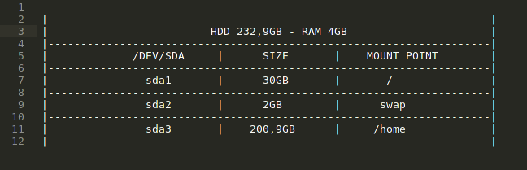
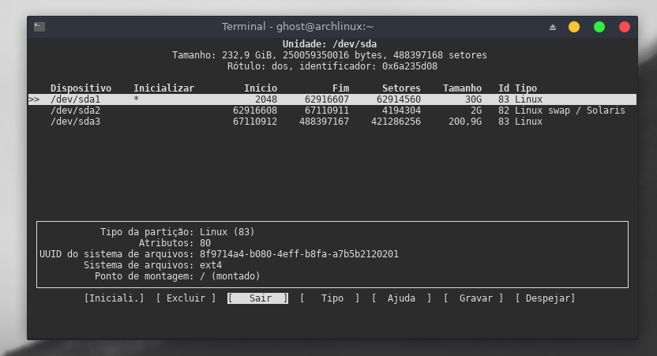
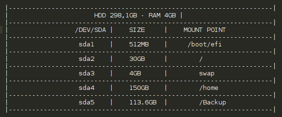
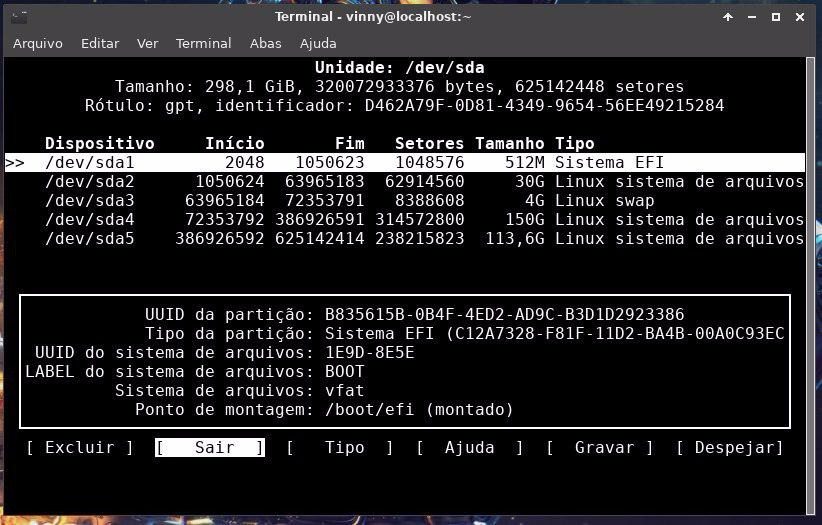

Guia de instalação - Arch Linux - Parte 1
Atenção: Caso você queria instalar via UEFI, os comandos estão com o simbolo ◎, caso for instalar via Legacy (BIOS)
apenas ignore.
1 - Faça o download do Arch Linux (Download Arch)
2 - Crie um pendrive bootavel (Download Etcher)
◎ Verifique o modo de inicialização: (UEFI)
efivar -l
Se este comando listar as variáveis EFI, isso significa que você iniciou a operação com sucesso no modo EFI.
Caso contrário, reinicie no menu de boot novamente e selecione o item correto lá, e não o item legacy-mode.
Se o diretório não existir, o sistema pode ser inicializado no modo BIOS ou CSM.
Conexão com a Internet
Primeiro, se você não souber o nome do seu dispositivo sem fio, liste todos os dispositivos Wi-Fi:
# device list
Em seguida, para procurar redes:
# station dispositivo scan
Você pode listar todas as redes disponíveis:
# station dispositivo get-networks
Por fim, para conectar-se a uma rede:
# station dispositivo connect SSID
Se uma senha for necessária, você será solicitado a digitá-la. Como alternativa, você pode fornecer como argumento da linha de comando:
# station nome_dispositivo connect nome_da_rede senha
Antes de instalar o Arch Linux, verifique se o computador está conectado à Internet.
# ping -c 3 archlinux.org
Atualize o relógio do sistema.
# timedatectl set-ntp true
Particionamento de Disco
Estou usando GPT em vez de MBR (há muitas vantagens de GPT sobre MBR), o Arch vem com algumas ferramentas de particionamento,
mas para GPT 'cgdisk' é usado. No entanto, se você estiver com uma inicialização dupla com o Windows ou se você já tiver outra distro instalada,
ou por algum motivo, você deseja manter o MBR, use o cfdisk em vez do cgdisk. O procedimento é o mesmo, basta executar o comando cfdisk em vez do cgdisk.
# cfdisk /dev/sda
Particionamento de disco BIOS


◎ Particionamento de Disco (UEFI)


Formatando o disco
Se o disco rígido estiver pronto e particionado de acordo com as suas necessidades, pode movê-lo formatando-o.
Formatar a partição sda1 (/root)
# mkfs.ext4 -L ROOT /dev/sda1
Ativar a partição SWAP
# mkswap -L SWAP /dev/sda2
# swapon /dev/sda2
Formatar a partição sda3(/home)
# mkfs.ext4 -L HOME /dev/sda3
◎ Formate a partição sda1 (/boot) (UEFI a partição /boot será sda1 segundo a foto)
# mkfs.fat -F32 -n BOOT /dev/sda1
( Caso dê algum erro instale o pacote # pacman -S dosfstools )
Montagem das partições
Antes de podermos baixar e instalar os pacotes base do Arch Linux precisamos montar nossas partições
e mudar para o nosso diretório root. Afinal, este é onde vamos instalar o Arch Linux.
Montagem da partição root e home
# mount /dev/sda1 /mnt
# mkdir /mnt/home
# mount /dev/sda3 /mnt/home
◎ Agora monte a partição: (/boot) (UEFI)
# mkdir -p /mnt/boot/efi && mount /dev/sda1 /mnt/boot/efi
Verifique as partições com este comando
# lsblk /dev/sda
Escolha o espelho de download
Instale o pacote pacman-contrib, que pode ser usado para classificar os espelhos
de acordo com suas velocidades de conexão e abertura para aproveitar o uso do espelho local mais rápido.
# pacman -S pacman-contrib
Faça o backup do /etc/pacman.d/mirrorlist existente:
# cp /etc/pacman.d/mirrorlist /etc/pacman.d/mirrorlist.backup
Opcionalmente, execute a seguinte linha sed para descomentar todos os espelhos:
# sed -i 's/^#Server/Server/' /etc/pacman.d/mirrorlist.backup
Finalmente, classifique os espelhos, aqui com o operando -n 6 para emitir apenas
os 6 espelhos mais rápidos: ( Isso pode demorar um pouco )
# rankmirrors -n 6 /etc/pacman.d/mirrorlist.backup > /etc/pacman.d/mirrorlist
Instalar os pacotes base do Arch Linux
# pacstrap -i /mnt base base-devel linux linux-firmware nano dhcpcd
Configurar fstab
Para configurar fstab (tabela de sistemas de arquivos) execute:
# genfstab -U /mnt >> /mnt/etc/fstab
Você deve sempre verificar se a entrada fstab está correta ou não, que será capaz de inicializar em seu sistema.
Para verificar a entrada fstab, execute:
# cat /mnt/etc/fstab
Se tudo estiver OK você deve ver o root e o home montado.
Agora é hora de mudar para o diretório root recém-instalado para configurá-lo.
# arch-chroot /mnt
Configurar KEYMAP
A variável KEYMAP é especificada no arquivo /etc/vconsole.conf.
Ele define qual layout de teclado, será usado nos consoles virtuais. Execute este comando:
# echo -e "KEYMAP=br-abnt2\nFONT=Lat2-Terminus16\nFONT_MAP=" > /etc/vconsole.conf
Configurações de idioma e fuso horário
Agora execute:
# locale-gen
# echo LANG=pt_BR.UTF-8 > /etc/locale.conf
# export LANG=pt_BR.UTF-8
Para ver todos os fusos horários disponíveis da América:
# ls /usr/share/zoneinfo/America
Agora você pode configurar a sua zona (No meu caso São Paulo):
# ln -sf /usr/share/zoneinfo/America/Sao_Paulo /etc/localtime
Vamos agora configurar o relógio do hardware, apenas no caso de termos uma data errada:
# hwclock -w -u
echo -e "NTP=0.arch.pool.ntp.org 1.arch.pool.ntp.org 2.arch.pool.ntp.org 3.arch.pool.ntp.org`
`\nFallbackNTP=0.pool.ntp.org 1.pool.ntp.org 0.fr.pool.ntp.org" >> /etc/systemd/timesyncd.conf
Configurar o repositório
Com este comando habilitamos o repositório multlib:
# sed -i '/multilib\]/,+1 s/^#//' /etc/pacman.conf
# pacman -Sy
Defina seu nome de host
# echo noisyarch > /etc/hostname
Em seguida, edite /etc/hosts para se parecer com isto:
127.0.0.1 localhost
127.0.1.1 noisyarch.localdomain noisyarch
# nano /etc/hosts
Alterar DNS:
# nano /etc/resolv.conf
nameserver 8.8.8.8
nameserver 8.8.4.4
Configurando a Conexão
# ip link ou ls /sys/class/net
# systemctl enable dhcpcd (rede cabeada)
Wi-fi (Instalar componentes Wi-fi)
# pacman -S wpa_supplicant dialog iw networkmanager
# systemctl enable NetworkManager
Criar Usuário(s)
Exemplo: "useradd -m -g [initial_group] -G [additional_groups] -s [login_shell] [username]"
# useradd -m -g users -G log,sys,wheel,rfkill,dbus -s /bin/bash username
Em seguida, forneça a senha para este novo usuário executando:
# passwd username
Não se esqueça de definir também a senha para o usuário root:
# passwd
Instale o bash-completion para que o Arch complete os comandos dos nomes dos pacotes.
# pacman -S bash-completion
Permitir que os usuários no grupo wheel, sejam capazes de executar tarefas administrativas com o sudo:
# sed -i '/%wheel ALL=(ALL) ALL/s/^#//' /etc/sudoers
Instalar e configurar o boot-loader (BIOS)
# mkinitcpio -P
# pacman -S grub efibootmgr
# grub-install --target=i386-pc --recheck /dev/sda
# pacman -S os-prober (Se você estiver inicializando em dual boot)
# pacman -S intel-ucode (Se você tiver uma CPU Intel)
# pacman -S amd-ucode (Se você tiver uma CPU AMD)
# grub-mkconfig -o /boot/grub/grub.cfg
◎ Instalar e configurar o boot-loader (UEFI)
# mkinitcpio -P
# pacman -S grub
# grub-install --target=x86_64-efi --efi-directory=/boot/efi --bootloader-id=grub --recheck
# pacman -S os-prober (Se você estiver inicializando em dual boot)
# pacman -S intel-ucode (Se você tiver uma CPU Intel)
# pacman -S amd-ucode (Se você tiver uma CPU AMD)
# grub-mkconfig -o /boot/grub/grub.cfg
Desmontar as partições e reiniciar:
# exit
# umount -R /mnt
# reboot
Instalação do Arch Linux concluída!
Clique aqui para ir para parte 2